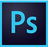

about
In a nutshell: I enjoy making things that look good and work well and I enjoy helping people – building websites ticks all my boxes.
I'm a fairly recent convert to the wonderful world of web development. Having built a few WordPress sites in 2017 and 2018, I was interested in learning more - the 2020 lockdown proved to be the perfect opportunity to upskill...
In addition to my web development skills, I have 11 years' experience in tech support, mountain guiding, running a small business and dabbling in copywriting and design.
So, if you're looking for a super enthusiastic, novice web developer, who has led people over mountains and helped grow small businesses, I'm your unicorn!
my toolbox
I'm comfortable with:

I've dabbled with: